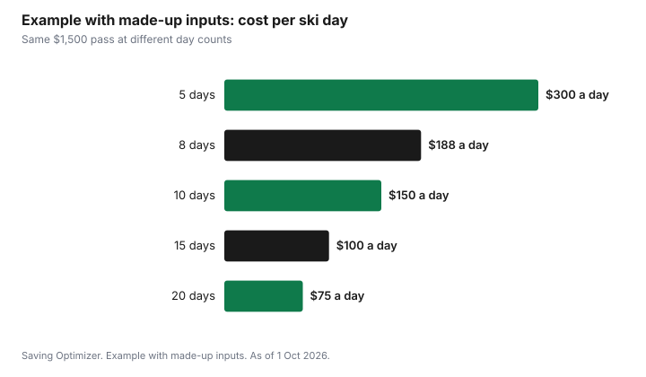

Sports · Canada
Epic vs Ikon vs a Local Season Pass in Canada (2026-27): Which One Pays Off
Whether an Epic Pass, an Ikon Pass or a local season pass pays off in Canada depends on one number you control: how many days you will actually ski, and where. Divide the pass price by those days and compare the result with the day-ticket price at the hill you would otherwise visit. As of 1 Oct 2026, Vail Resorts says Epic Pass and Epic Day Pass prices increase after 7 October 2026 (news release, 29 Sep 2026), and Alterra Mountain Company says 8 October 2026 is the last chance to buy the Ikon Pass at current rates (news release, 24 Sep 2026). Revelstoke Mountain Resort lists the current first-time adult Ikon Pass at US$1,449 or C$1,959 and Ikon Base at US$1,019 or C$1,379. This page does not quote an Epic price, because we could not read one on an official Vail Resorts page; check epicpass.com for the price and currency shown at checkout. If you are reading after those dates, the passes are still on sale at the next, higher price step, and the same division tells you whether the new price still works.
Key takeaways
- Cost per ski day = pass price ÷ days you will really ski. Compare it with the day-ticket price you would pay instead.
- As of 1 Oct 2026: Epic prices rise after 7 Oct (Vail Resorts). Current Ikon rates end 8 Oct (Alterra): Ikon Pass US$1,449 / C$1,959 and Ikon Base US$1,019 / C$1,379, first-time adult.
- If checkout shows US dollars, convert at your card's rate and add any foreign transaction fee before comparing.
- In Canada, Epic's anchor is Whistler Blackcomb. Ikon's Canadian list is longer: SkiBig3 in Banff, Revelstoke, Tremblant, Blue Mountain, Sun Peaks and more, often with day limits.
- A local pass can beat both if you ski one hill. Revelstoke's adult pass went from C$1,799 to C$2,349 after 1 Oct, which shows how much early deadlines matter.
- Example with made-up inputs: at 8 days, a pass that costs $1,500 is $188 a day; at 15 days it is $100.
Where the prices stand, and what happens after the deadline
Both big passes use stepped pricing. The price is lowest in spring, rises at announced dates, and sales eventually close before or during the season. As of 1 Oct 2026, the next step for both arrives in the second week of October.
| Pass | Current adult price | Current price ends | What comes next |
|---|---|---|---|
| Epic Pass | Check epicpass.com at checkout | After 7 Oct 2026 | Higher price; Vail says buyers now get five Epic Friend Tickets (50% off adult lift tickets) |
| Epic Local | Check epicpass.com at checkout | After 7 Oct 2026 | Higher price |
| Ikon Pass | US$1,449 or C$1,959 | After 8 Oct 2026 | Higher price; amount not announced |
| Ikon Base | US$1,019 or C$1,379 | After 8 Oct 2026 | Higher price; amount not announced |
Both companies describe these dates as price increases: Vail says prices "increase after October 7" and Alterra calls 8 October "the last chance to save". Neither release gives the amount of the next step. If you are deciding after the deadline, do not rely on the numbers in this table; open the pass site, read the price shown that day in the currency charged at checkout, and run the worksheet below with that figure.
A missed deadline is not a reason to buy the next tier in a hurry, and a looming deadline is not a reason to buy a pass you will not use. A pass that saves $100 against the next tier but covers resorts you will not visit is still the expensive choice.
Canadian access: what each pass actually covers here
For a skier who lives in Canada, the useful question is not how many resorts are on the map. It is which resorts within driving distance, or on a trip you will really take, are on each pass, and how many days the pass allows at each one.
| Region | Epic | Ikon |
|---|---|---|
| British Columbia coast | Whistler Blackcomb (unlimited on Epic Pass; restricted days on Epic Local) | Cypress Mountain |
| B.C. interior and Rockies | Fernie, Kicking Horse, Kimberley (limited days) | Revelstoke, RED Mountain, Panorama, Sun Peaks, SilverStar |
| Alberta | Nakiska (limited days) | SkiBig3: Banff Sunshine, Lake Louise, Mt. Norquay (7 days combined on Ikon, 5 on Base) |
| Ontario | None | Blue Mountain |
| Quebec | Mont-Sainte-Anne, Stoneham (limited days) | Tremblant, Le Massif |
Epic's Canadian strength is depth at one resort: the full Epic Pass gives unlimited days at Whistler Blackcomb. Epic Local has holiday restrictions and a shared limit across Whistler, Vail and Beaver Creek, so a Whistler skier who plans to ride over Christmas should read the restriction dates before choosing the cheaper product. Whistler Blackcomb has also sold EDGE Cards, prepaid packs of 2, 5 or 10 days, to residents of Canada and Washington State. For a skier who will spend fewer than a handful of days at Whistler, an EDGE Card can be the alternative to a full pass.
Ikon's Canadian strength is breadth: Ontario's Blue Mountain, Quebec's Tremblant, Alberta's Banff resorts and much of interior B.C. Most of those are capped at a set number of days, and Ikon Base has fewer days and more blackout dates than the full Ikon Pass at many destinations. The 7-day combined cap across the three SkiBig3 resorts on the full Ikon Pass, or 5 on Base, is the typical shape: generous for a one-week trip, thin for a season in Banff.
The local season pass: the option the comparisons leave out
Most Canadian skiers ski one or two hills, often within a two-hour drive. For them, the right comparison is usually a local season pass, not Epic versus Ikon. Local passes have their own deadlines, and they can be steep.
Revelstoke Mountain Resort is a clear example. Its season-pass page, as of 1 Oct 2026, lists the adult (19-64) pass at C$1,799 until 1 October and C$2,349 at the regular rate, a C$550 difference, and the adult midweek pass at C$1,439 until 1 October and C$1,879 regular. Revelstoke is also on Ikon with a day cap, so a Revelstoke skier who misses the early date can compare the regular local pass, the Ikon Pass and day tickets side by side.
Smaller community hills, club-owned areas and municipal ski hills often sell season passes for much less than a destination resort, sometimes with family or student pricing. If your skiing is mostly evenings and weekends at a local hill, start with that hill's pass and only add a multi-resort pass if you plan a trip that would cost more in day tickets.
The break-even worksheet
Use the same four lines for every option. The inputs are yours; the arithmetic is the same.
- Write down the days you will ski this season, by resort. Use last season's real count as the anchor, not the count you hoped for.
- For each pass, write the price in Canadian dollars. For a pass priced in US dollars, convert at your card's rate and add any foreign transaction fee.
- Divide the pass price by the days that pass would cover. Days beyond a pass's cap at a resort do not count; price those as day tickets.
- Compare the cost per day with the day-ticket price you would pay instead, after any buy-ahead discount you would really use.
| Line | Epic or Epic Local | Ikon or Ikon Base | Local pass | Day tickets only |
|---|---|---|---|---|
| Pass price in CAD | Convert from USD, add card fee | Price at checkout | Hill's current tier | $0 |
| Days covered | Within caps and blackouts | Within caps and blackouts | All days at that hill | 0 |
| Extra day tickets | Days over caps | Days over caps | Days at other hills | All days |
| Season total | Pass + extra tickets | Pass + extra tickets | Pass + extra tickets | Tickets only |
| Cost per day | Total ÷ all days | Total ÷ all days | Total ÷ all days | Total ÷ all days |
Example with made-up inputs: three skiers, three answers
These numbers are an example with made-up inputs. They are not resort prices, and the exchange rate is made up. Use the current prices and your own card's rate.
Skier A lives in Vancouver and expects 15 days at Whistler. A full multi-resort pass at a made-up $1,500 Canadian after conversion works out to $100 a day. Day tickets at a made-up $180 would cost $2,700. The pass wins easily.
Skier B lives in Toronto and expects 6 days at a local hill plus a 4-day trip out west. A local pass at a made-up $650 covers the 6 local days. The western trip in day tickets at a made-up $170 costs $680. Total: $1,330. A multi-resort pass at a made-up $1,450 that covers both the local hill and the trip resort, within day caps, would be $1,450 for 10 days, or $145 a day, compared with $133 a day for the local pass and tickets. Close, and the answer flips if the trip grows to six days.
Skier C expects 4 days in total. Even an expensive day ticket at a made-up $180 comes to $720, well below any multi-resort pass. Buy-ahead tickets or a multi-day card are the better tools.
| Skier | Days | Best option in the example | Season total | Cost per day |
|---|---|---|---|---|
| A: Whistler regular | 15 | Multi-resort pass | $1,500 | $100 |
| B: local hill plus a trip | 10 | Local pass plus day tickets | $1,330 | $133 |
| C: occasional | 4 | Day tickets | $720 | $180 |

Currency, payment plans and refund protection
Check the currency at checkout. Vail Resorts' news releases quote prices without naming a currency, and Ikon's partner resorts show both US-dollar and Canadian-dollar prices. If you pay in US dollars and your card charges a foreign transaction fee, the real cost is the converted price plus that fee, which can add a noticeable amount on a four-figure purchase. Some Canadian cards do not charge the fee; the guide to cutting foreign exchange fees explains where it shows up. Canadian buyers can see Ikon prices in Canadian dollars through a Canadian retailer such as Skican or a Canadian partner resort; compare the checkout price, not the headline.
In past seasons Epic has included a refund program called Epic Coverage with its passes, Ikon has sold optional pass insurance, and both have offered instalment plans with a down payment. Read what the protection covers before paying for it: job loss, injury and resort closures are treated differently, and a product that refunds only unused value may matter less if you ski early in the season. Read the cancellation terms before you buy, not after a bad week.
Kids, students and families
Child and youth pricing changes the maths for families. Both multi-resort passes have child pricing, and some resorts run kids-ski-free or grade-specific programs tied to a parent's pass or to a school-age card. The guide to kids' skiing and snowboarding covers lessons, rentals and those programs. Students at a university or college often qualify for student pricing at local hills, which may beat an adult multi-resort pass even for a frequent skier.
Decision rules
- Fewer than about 5 to 6 days in total: day tickets, buy-ahead tickets or a multi-day card usually win.
- Mostly one hill: start with that hill's season pass, then add day tickets for trips.
- Many days at Whistler: the full Epic Pass, or an EDGE Card if your Whistler days are few.
- A trip to Banff plus a home hill on Ikon such as Blue Mountain or Tremblant: price the Ikon Pass against the local pass plus a week of tickets.
- Missed a deadline: rerun the worksheet with the new price. The answer may not change.
Whichever you choose, put the pass in a ski sinking fund next spring. Spring is when the lowest prices are usually announced, and a fund that already holds the money turns an October scramble into a calm decision. The sinking funds guide shows how to set one up.
Sources
- Vail Resorts, Vail Resorts Launches Epic Ascent, news release, 29 Sep 2026 (prnewswire.com), as of 1 Oct 2026. Epic Pass and Epic Day Pass prices increase after 7 Oct; five Epic Friend Tickets; 20% off for ages 13-30.
- Alterra Mountain Company, What's New Across the Ikon Pass Community for 26/27, news release, 24 Sep 2026 (alterramtn.co), as of 1 Oct 2026. Last chance to save is 8 Oct 2026.
- Revelstoke Mountain Resort, Season Passes (revelstokemountainresort.com/tickets-passes/winter-passes), as of 1 Oct 2026. Adult C$1,799 until 1 Oct, C$2,349 regular; midweek C$1,439 and C$1,879; Ikon Pass C$1,959 (US$1,449) and Ikon Base C$1,379 (US$1,019).
- Skican, Buy Ikon 26/27 (skican.com/campaigns/buy-ikon), as of 1 Oct 2026. C$1,959 Ikon Pass and C$1,379 Ikon Base, first-time adult 23+.
- Ikon Pass, resort and access pages, ikonpass.com, as of 1 Oct 2026. Canadian destinations and day limits.
- Epic Pass and Whistler Blackcomb, pass and EDGE Card pages, as of 1 Oct 2026. Whistler Blackcomb access, Epic Local restrictions, EDGE Cards for Canadian and Washington residents; partner resorts in Canada.
- The Whistler skier, Toronto skier and occasional-skier figures, the exchange rate and every amount in the example table and chart are an example with made-up inputs.
Frequently asked questions
When do Epic and Ikon prices go up for 2026-27?
As of 1 Oct 2026, Vail Resorts says Epic Pass and Epic Day Pass prices increase after 7 October 2026, and Alterra says 8 October 2026 is the last chance to buy the Ikon Pass at current rates. Both are price increases, not announced ends of sales.
How much is the Epic Pass for Canadians in 2026-27?
Check epicpass.com for the price and currency shown at checkout. As of 1 Oct 2026 we could not read a current adult price on an official Vail Resorts page, so this page does not quote one. Vail says prices increase after 7 October 2026 and that skiers aged 13 to 30 get 20% off the Epic Pass and Epic Local Pass.
How much is the Ikon Pass in Canadian dollars?
As of 1 Oct 2026, Skican and Revelstoke Mountain Resort list the first-time adult Ikon Pass at C$1,959 and Ikon Base at C$1,379; Revelstoke gives the US-dollar rates as US$1,449 and US$1,019. Use the price shown at checkout in the currency you will be charged.
Which Canadian resorts are on Epic and Ikon?
Epic includes Whistler Blackcomb plus limited days at Fernie, Kicking Horse, Kimberley, Nakiska, Mont-Sainte-Anne and Stoneham. Ikon includes Banff Sunshine, Lake Louise and Mt. Norquay, Revelstoke, RED Mountain, Panorama, Sun Peaks, SilverStar, Cypress, Blue Mountain, Tremblant and Le Massif, mostly with day caps.
How many days do I need to ski for a season pass to pay off?
Divide the pass price by the days you will really ski and compare the result with the day-ticket price you would pay instead. If the cost per day is lower than the ticket, the pass pays off. Count only days within the pass's caps and blackout dates.
Is a local season pass better than Epic or Ikon?
Often, if you ski mostly at one hill. Price the local pass first, then add day tickets for any trip, and compare that total with a multi-resort pass. Local passes have their own deadlines; Revelstoke lists its adult pass at C$1,799 until 1 October 2026 and C$2,349 at the regular rate.
Researched and drafted with AI assistance and fact-checked against official Canadian sources. How we create content.
Disclosure: Saving Optimizer may earn a commission if a partner link is added later. No partnership with Vail Resorts, Alterra Mountain Company, any resort or any retailer is claimed on this page, and no pass, resort or product is ranked. Education only. Prices change at announced dates; confirm the price at checkout.